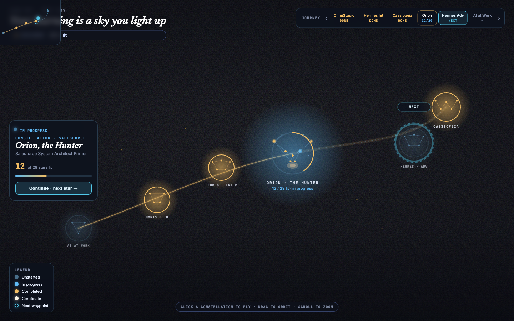
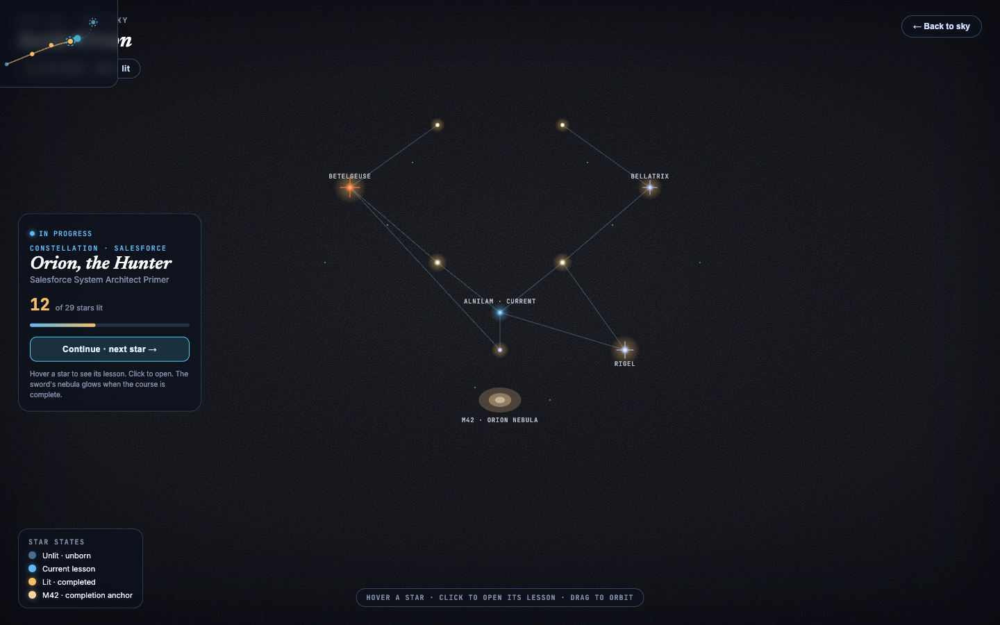
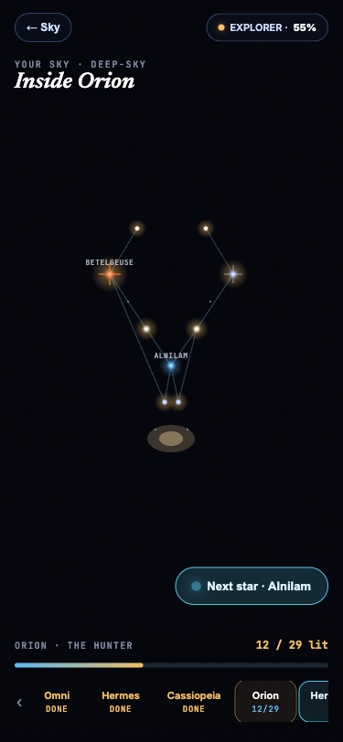

1 · Concept
Your learning is a sky you light up - and the sky is a map. Every course is a real constellation you can fly to; a faint Sky Road threads them in the order you should travel; the next constellation ahead glows as your Frontier Waypoint.
This is a compositional reboot of the rejected profile galaxy. The old scene rendered every course at full fidelity at once (up to 29 stars × ~7 courses = a jumble of dots). The reboot uses level-of-detail: exactly ONE constellation renders at full deep-sky fidelity at a time; every other course is a compact, recognizable constellation glyph (its real bright-anchor asterism). A guided Sky Road + pulsing waypoint gives the video-game world-map feel Chris asked for.
- Surface: Explore (primary) + Monitor aggregate + Command/Inspect on focus.
- Same sky: navy→black gradient, film grain, near-realistic pale nebula, diffraction-spiked stars, hairline icy figure lines - identical to the approved deep-sky base.
- Real astronomy: Orion (hourglass, Betelgeuse orange-red, Rigel blue-white, M42 sword) and Cassiopeia (W) with real member stars. No invented scatter.
2 · Design Tokens (additive on deep-sky base)
Full file: design-tokens-sky-roads.css. Every token ships an html.dark remap. New vocabulary introduced by this concept:
Sky Road (the guided path)
| Token | Value | Role |
|---|---|---|
--road-traveled | #FFC46B | Warm gold - the road behind you (completed/certified sectors) |
--road-untraveled | #7DD3FC | Faint cool - the road ahead (unstarted sectors), dashed |
--road-width / --road-opacity | 1.5 / 0.5 | Thin additive route line |
Frontier Waypoint (the "next" beacon)
| Token | Value | Role |
|---|---|---|
--waypoint-ring | #22D3EE | Cyan reticle ring + pulse |
--waypoint-pulse-ms | 1800 | Gentle pulse period |
--waypoint-tag-bg | rgba(6,15,31,0.72) | "NEXT · [course]" tag |
Node achievement states
| State | Token | Glyph visual |
|---|---|---|
| certified | --node-certified | White-hot halo + diamond badge |
| completed | --node-completed | Warm gold figure, steady halo |
| in-progress | --node-inprogress | Partial figure + cyan current-star pulse + progress arc |
| unstarted | --node-unstarted | Faint cool pinprick figure, dim halo |
Progress arc, LOD, camera, chrome
| Token | Value | Role |
|---|---|---|
--arc-fill / --arc-fill-current | #FFC46B / #22D3EE | lit/total arc gauge around each node |
--glyph-scale | 0.34 | LOD: glyph node vs full constellation |
--focus-fill | 0.60 | Focused constellation fills ~60% viewport height |
--fly-dolly-ms / --fly-arc-ms | 900 / 1100 | Dolly-and-tilt camera flight |
--hud-card-bg | rgba(6,15,31,0.72) | Edge-anchored HUD panels |
Typography: Inter (UI) + JetBrains Mono (kickers/labels) + Newsreader italic (constellation display names) - kept from the deep-sky base. Spacing base 4px.
3 · Component Gallery (verified renders)
3.1 Desktop - Overview (the guided atlas)

mockups/mockup-sky-roads-overview.html · Explore surface · verified at 1440×900
Shows the full guided map: the warm-gold traveled road, the faint dashed untraveled road, the focused Orion node at full fidelity (12/29 lit, cyan current star, progress arc), the pulsing cyan NEXT waypoint on Hermes Advanced, the JourneyRail, the contextual ConstellationCard, the SkyChart minimap, and the legend.
3.2 Desktop - Approach (inside a constellation)

mockups/mockup-sky-roads-approach.html · Command/Inspect surface · verified at 1440×900
Flying into Orion: Betelgeuse orange-red with diffraction spike (upper-left), Rigel blue-white (lower-right), the belt diagonal with the current star (Alnilam) pulsing cyan, M42 nebula below the belt as the completion anchor, hairline figure lines, per-star state legend, and the "Back to sky" affordance.
3.3 Mobile - 375px

mockups/mockup-sky-roads-mobile.html · verified at 375×812
Compact focused constellation, thumb-reachable JourneyRail as primary navigation (scrollable, signals more content), floating "Next star" CTA in the thumb zone, progress bar, and top bar (back + rank chip).
4 · Responsive Behavior
| Breakpoint | Behavior |
|---|---|
| Desktop (≥1024) | Full 3D canvas. Overview shows all glyphs + road; focused constellation fills --focus-fill (0.60). Full HUD: JourneyRail, ConstellationCard, SkyChart, legend. |
| Tablet (≤768) | Compact canvas, camera pulled back, fewer glyphs visible, focused constellation fills --focus-fill-mobile (0.46). SkyChart collapses to a toggle. |
| Mobile (≤480) | JourneyRail becomes the primary navigation (thumb-reachable, scrollable). Floating "Next star" CTA in the thumb zone. Hit targets ≥44px. |
5 · State Matrix
| State | Focused constellation | Glyph node | Road segment | SkyChart dot | JourneyRail chip |
|---|---|---|---|---|---|
| certified | white-hot flare | white-hot halo + diamond | traveled (gold) | white-hot | white-hot + ✓ |
| completed | warm gold bloom | warm gold figure | traveled (gold) | warm gold | warm gold |
| in-progress | cyan pulse on current star | partial + cyan pulse + arc | traveled (gold) | cyan | cyan |
| unstarted | - | faint cool pinprick | untraveled (cool) | faint cool | faint cool |
| next waypoint | - | cyan reticle + pulse + tag | segment pulses | cyan ring | highlighted + NEXT |
| loading / empty / error / no-webgl | static unlit + shimmer / editorial empty copy / unlit + retry / fall back to 2D FullSkySection | ||||
6 · Quality Gates
Slop self-audit
0 / 10
No tech gradient, no generic indigo, no feature-tile grid, no accent rail, no unearned blur, no monument stat, no icon topper, no center stack, chosen type, correct surface (Explore/Command-Inspect).
Wow-factor bar
6 / 6
Real imagery (2 FAL mood boards embedded) · motion (dolly-and-tilt flight, waypoint pulse, road reveal) · depth (parallax, nebula, LOD) · typographic scale (Newsreader display) · craft (consistent tokens, a11y) · signature (Sky Road + LOD glyph atlas).
Imagery gate
PASS
All 3 mockups embed real generated deep-sky imagery (background-image), not flat CSS.
Accessibility
WCAG AA
Every node/dot/chip is a real button with aria-label; arrow-key waypoint traversal; focus ring; prefers-reduced-motion zeroes flight/parallax/pulse; HUD ink ≥7:1.
7 · Handoff to Steel (what to build)
- LOD galaxy model - extend
galaxy-model.ts(pure, SSR-safe, unit-tested): addglyph(bright-anchor subset),road(ordered path + traveled/untraveled),frontierSlug(next waypoint),focus. - Scene rewrite -
ProfileScene.tsx: one focused constellation at full fidelity +ConstellationGlyphnodes +SkyRoadroute +WaypointReticle. - CameraRig - dolly-and-tilt flight (pull-back → arc approach → decelerate + FOV breath), not a bare lerp. Reduced-motion static.
- HUD -
SkyChart(upgraded minimap with road + you-are-here + next-waypoint + view cone),ConstellationCard(contextual info),JourneyRail(waypoint strip), rank chip, legend. - Responsive + a11y - mobile JourneyRail primary nav, ≥44px targets, arrow-key traversal, focus ring, reduced-motion.
Contracts map to contracts-constellations.ts (no renames). Engine: Three.js/r3f + UnrealBloom. Real-asterism data from IAU/Bayer (already in asterism-data.ts).